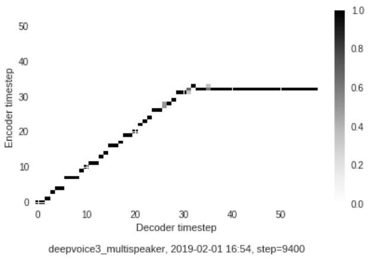
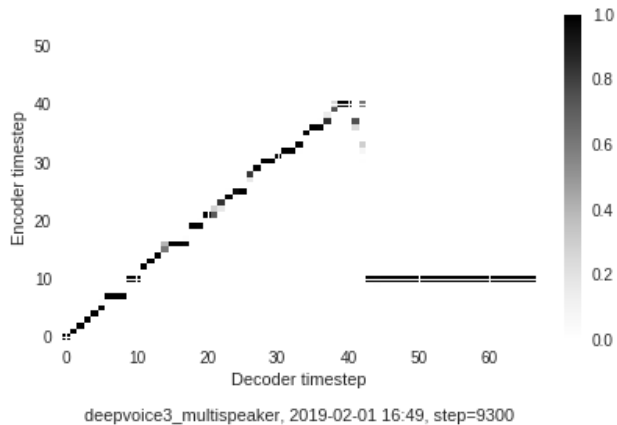
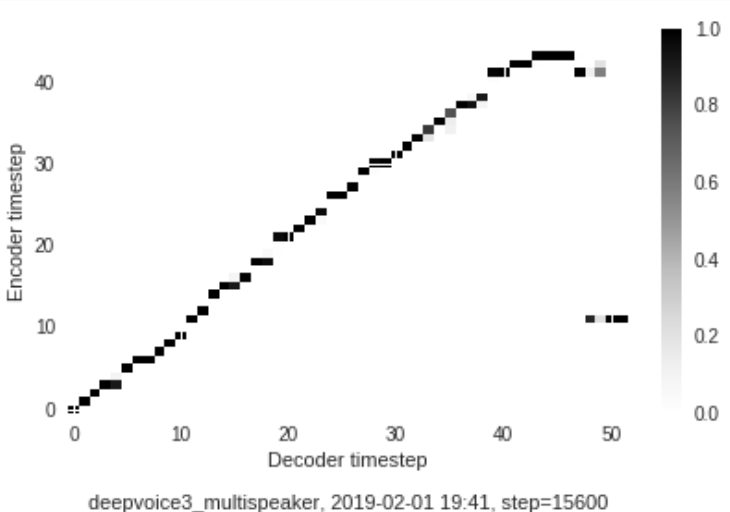
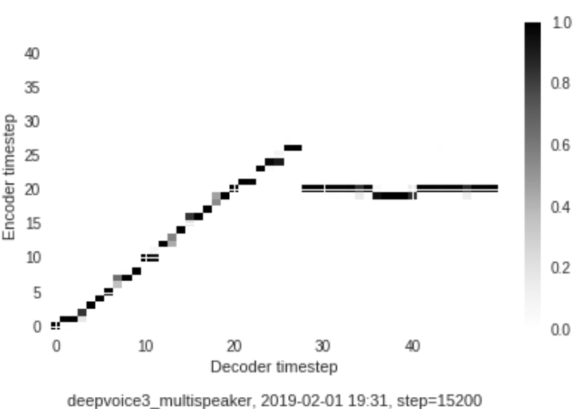

Predicted Voices for Speaker 84
But don't expect anything right.
I won't make an official complaint.
They make a selective perception process.
Predicted Voices forSpeaker 85
Players are fighting to stay in the team.
The difference in rainbow depends considerably on the size of the drops and the width of the coloured band increases as the size of the drops increase.
created with
Website Builder Software .